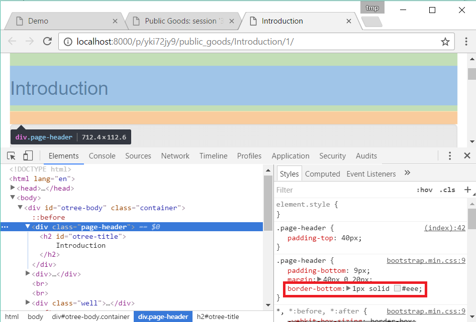

Templates
Template syntax
Variables
You can display a variable like this:
Your payoff is {{ player.payoff }}.
The following variables are available in templates:
player: the player currently viewing the pagegroup: the group the current player belongs tosubsession: the subsession the current player belongs toparticipant: the participant the current player belongs tosession: the current sessionCAny variables you passed with vars_for_template().
Conditions (“if”)
Note
oTree 3.x used two types of tags in templates: {{ }} and {% %}.
Starting in oTree 5, however, you can forget about {% %} and just use {{ }} everywhere if you want.
The old format still works.
{{ if player.is_winner }} you won! {{ endif }}
With an ‘else’:
{{ if some_number >= 0 }}
positive
{{ else }}
negative
{{ endif }}
Complex example:
{{ if a or b }}
.....
{{ elif c and d }}
.....
{{ else }}
.....
{{ endif }}
Loops (“for”)
{{ for item in some_list }}
{{ item }}
{{ endfor }}
Accessing items in a dict
Whereas in Python code you do my_dict['foo'],
in a template you would do {{ my_dict.foo }}.
Things you can’t do
The template language is just for displaying values.
You can’t do math (+, *, /, -)
or otherwise modify numbers, lists, strings, etc.
For that, you should use vars_for_template().
How templates work: an example
oTree templates are a mix of 2 languages:
HTML (which uses angle brackets like
<this>and</this>).Template tags (which use curly braces like
{{ this }})
In this example, let’s say your template looks like this:
<p>Your payoff this round was {{ player.payoff }}.</p>
{{ if subsession.round_number > 1 }}
<p>
Your payoff in the previous round was {{ last_round_payoff }}.
</p>
{{ endif }}
{{ next_button }}
The key point
If one of your pages doesn’t look the way you want, you can isolate which of the above steps went wrong. In your browser, right-click and “view source”. (Note: “view source” may not work in split-screen mode.)
You can then see the pure HTML that was generated (along with any JavaScript or CSS).
If the HTML code doesn’t look the way you expect, then something went wrong on the server side. Look for mistakes in your
vars_for_templateor your template tags.If there was no error in generating the HTML code, then it is probably an issue with how you are using HTML (or JavaScript) syntax. Try pasting the problematic part of the HTML back into a template, without the template tags, and edit it until it produces the right output. Then put the template tags back in, to make it dynamic again.
Images (static files)
The simplest way to include images, video, 3rd party JS/CSS libraries, and other static files in your project is to host them online, for example on Dropbox, Imgur, YouTube, etc.
Then, put its URL in an <img> or <video> tag in your template, for example:
<img src="https://i.imgur.com/gM5yeyS.jpg" width="500px" />
You can also store images directly in your project. (but note that large file sizes can affect performance). oTree Studio has an image upload tool. (If you are using a text editor, see here.) Once you have stored the image, you can display it like this:
<img src="{{ static 'folder_name/puppy.jpg' }}"/>
Dynamic images
If you need to show different images depending on the context
(like showing a different image each round),
you can construct it in vars_for_template and pass it to the template, e.g.:
@staticmethod
def vars_for_template(player):
return dict(
image_path='my_app/{}.png'.format(player.round_number)
)
Then in the template:
<img src="{{ static image_path }}"/>
Includable templates
If you are copy-pasting the same content across many templates,
it’s better to create an includable template and reuse it with
{{ include_sibling }}.
For example, if your game has instructions that need to be repeated on every page,
make a template called instructions.html, and put the instructions there,
for example:
<div class="card bg-light">
<div class="card-body">
<h3>
Instructions
</h3>
<p>
These are the instructions for the game....
</p>
</div>
</div>
Then use {{ include_sibling 'instructions.html' }} to insert it anywhere you want.
Note
{{ include_sibling }} is a new alternative to {{ include }}.
The advantage is that you can omit the name of the app: {{ include_sibling 'xyz.html' }}
instead of {{ include 'my_app/xyz.html' }}.
However, if the includable template is in a different folder, you must use {{ include }}.
JavaScript and CSS
Where to put JavaScript/CSS code
You can put JavaScript and CSS anywhere just by using the usual
<script></script> or <style></style>, anywhere in your template.
If you have a lot of scripts/styles,
you can put them in separate blocks outside of content: scripts and styles.
It’s not mandatory to do this, but: it keeps your code organized and ensures that things are loaded in the correct order
(CSS, then your page content, then JavaScript).
Customizing the theme
If you want to customize the appearance of an oTree element, here is the list of CSS selectors:
Element |
CSS/jQuery selector |
|---|---|
Page body |
|
Page title |
|
Wait page (entire dialog) |
|
Wait page dialog title |
|
Wait page dialog body |
|
Timer |
|
Next button |
|
Form errors alert |
|
For example, to change the page width, put CSS in your base template like this:
<style>
.otree-body {
max-width:800px
}
</style>
To get more info, in your browser, right-click the element you want to modify and select “Inspect”. Then you can navigate to see the different elements and try modifying their styles:

When possible, use one of the official selectors above.
Don’t use any selector that starts with _otree, and don’t select based on Bootstrap classes like
btn-primary or card, because those are unstable.
Passing data from Python to JavaScript (js_vars)
To pass data to JavaScript code in your template,
define a function js_vars on your Page, for example:
@staticmethod
def js_vars(player):
return dict(
payoff=player.payoff,
)
Then, in your template, you can refer to these variables:
<script>
let x = js_vars.payoff;
// etc...
</script>
Bootstrap
oTree comes with Bootstrap, a popular library for customizing a website’s user interface.
You can use it if you want a custom style, or a specific component like a table, alert, progress bar, label, etc. You can even make your page dynamic with elements like popovers, modals, and collapsible text.
To use Bootstrap, usually you add a class= attribute to your HTML
element.
For example, the following HTML will create a “Success” alert:
<div class="alert alert-success">Great job!</div>
Mobile devices
Bootstrap tries to show a “mobile friendly” version when viewed on a smartphone or tablet.
Charts
You can use any HTML/JavaScript library for adding charts to your app. A good option is HighCharts, to draw pie charts, line graphs, bar charts, time series, etc.
First, include the HighCharts JavaScript:
<script src="https://code.highcharts.com/highcharts.js"></script>
Go to the HighCharts demo site and find the chart type that you want to make. Then click “edit in JSFiddle” to edit it to your liking, using hardcoded data.
Then, copy-paste the JS and HTML into your template,
and load the page. If you don’t see your chart, it may be because
your HTML is missing the <div> that your JS code is trying to insert the chart
into.
Once your chart is loading properly, you can replace the hardcoded data
like series and categories with dynamically generated variables.
For example, change this:
series: [{
name: 'Tokyo',
data: [7.0, 6.9, 9.5, 14.5, 18.2, 21.5, 25.2, 26.5, 23.3, 18.3, 13.9, 9.6]
}, {
name: 'New York',
data: [-0.2, 0.8, 5.7, 11.3, 17.0, 22.0, 24.8, 24.1, 20.1, 14.1, 8.6, 2.5]
}]
To this:
series: js_vars.highcharts_series
…where highcharts_series is a variable you defined in js_vars.
If your chart is not loading, click “View Source” in your browser and check if there is something wrong with the data you dynamically generated.
Number formatting
You can round numbers using the to2, to1, or to0 filters. For example::
{{ 0.1234|to2 }} outputs 0.12.
Note
As of oTree 6.0 (pip install otree --upgrade --pre),
there is also to3 and to4 filters.
As of oTree 6.0 (pip install otree --upgrade --pre),
if you set THOUSAND_SEPARATOR = "," in settings.py,
big numbers will be formatted like “1,234,567.00”.
You can set it to “.”, “ “, etc.
Comments